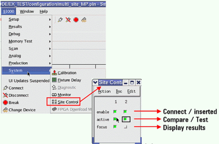

Using the site control
You use the site control to:
- Select the sites to be tested.
- Select the site from which to display the results.
- Watch the states of a site during test flow execution.
- To open the site control, see the illustration below.
To open the site control window see the figure below:

Functional changes
- Introduced before SmarTest 6.3.2